NY
Mes compétences
Languages
- HTML
- CSS
- Sass
- JavaScript
- PHP
- Java
- SQL
- Markdown
Frameworks
- Symfony
Libraries
- Jquery(notion)
- GSAP
- Doctrine
- Bootstrap
 GSAP
GSAPCMS
- WordPress
Mes outils
Gestion de bases de données
- MySQL
 PHPmyAdmin
PHPmyAdmin
Programmation
- VSCode
- Eclipse
- Composer
- NPM
- Vim
- Git
- GitHub
 Eclipse
EclipseVisuel
- GIMP
- Figma
OS
- Windows
- Arch
- Debian
Diplômes et cértifications
- Développeur d'applications - PHP
openclassrooms.com - BTS Services Informatiques aux organisations (option SLAM)
Ecole ITIC Paris - Responsive Web Design Certification
freeCodeCamp.org - CAP Cuisine (Formation en un an)
Lycée Belliard Paris - Baccalauréat Économique et Social
Lycée Français de Bangkok Thaïlande
Expériences professionnelles
Stage
- -
Développeur WordPress - CCA MRL - Paris
- Intégration de maquette
- Réalisation de base de données SQL
- Développement du site en PHP
- -
Développeur Intégrateur Web - Agence OPINAKA - Montpellier
- Utilisation du Framework GSAP
- Création de composantes d'animations (JavaScript/CSS)
- Intégration des créations dans WordPress
CDI CDD Intérim Auto-entrepreneur
- 5 ans de cuisine dans différentes structures
Cuisinier (Commis de cuisine & Chef de partie) - Paris
- Hôtels 5 et 4 étoiles (Pullman Tour Eiffel & Charles de Gaulle, The Hoxton, Hilton la Défense, Le Jardin du Marais…)
- Restaurants gastronomiques (La Scène Thèleme)
- Maisons de retraites (Korian,Domytis)
Portfolio

Vacance à la montagne
BTS SIO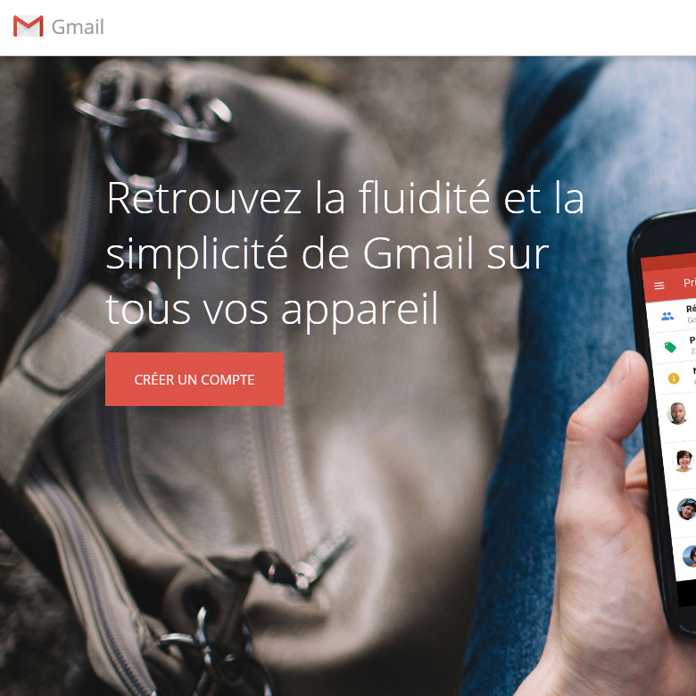 PPE Gmail
BTS SIO
Gestion des ligues - PHP
BTS SIO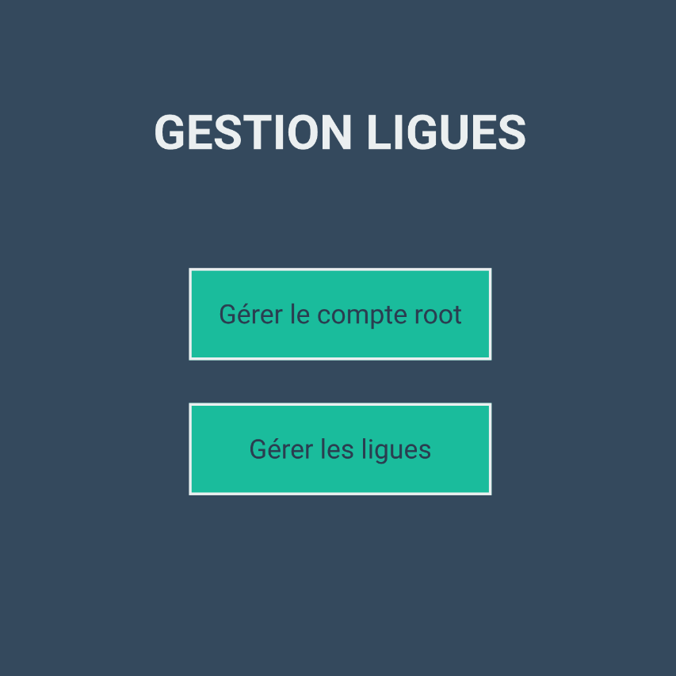 Gestion des ligues - Java
BTS SIO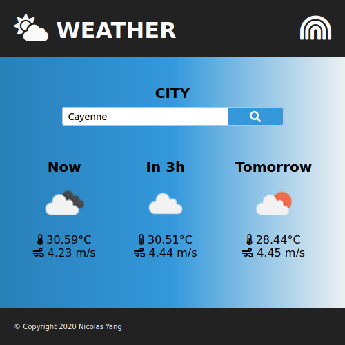 Météo
BTS SIO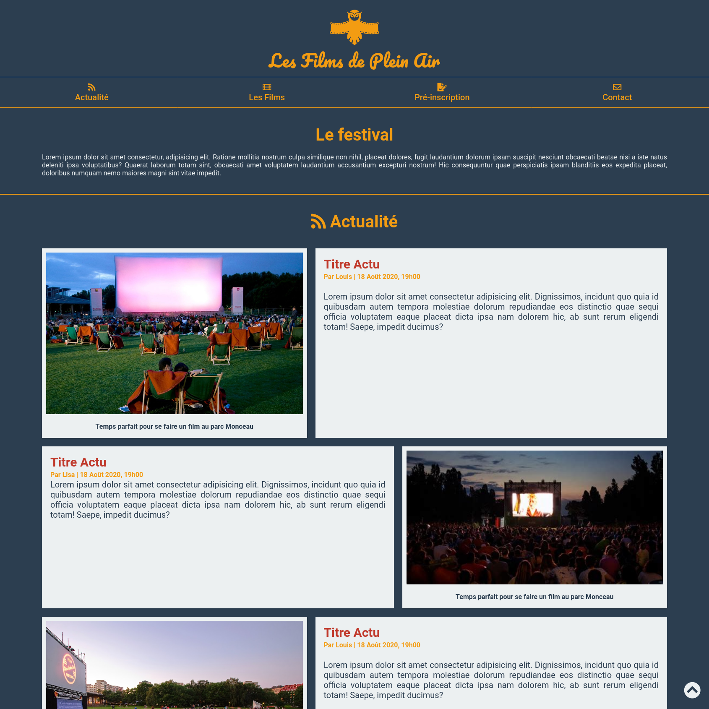 Féstival de films de plein air
Openclassrooms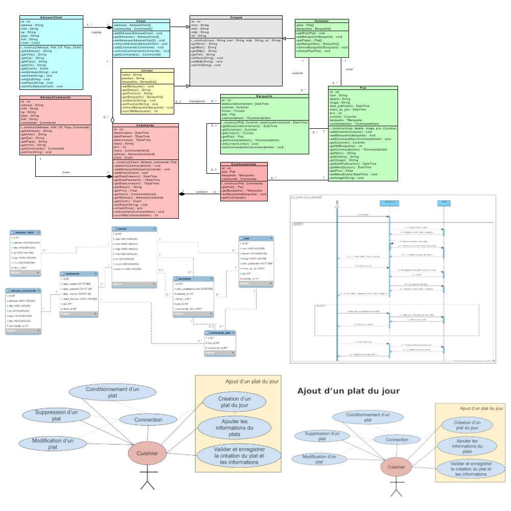 Express Food - UML
Openclassrooms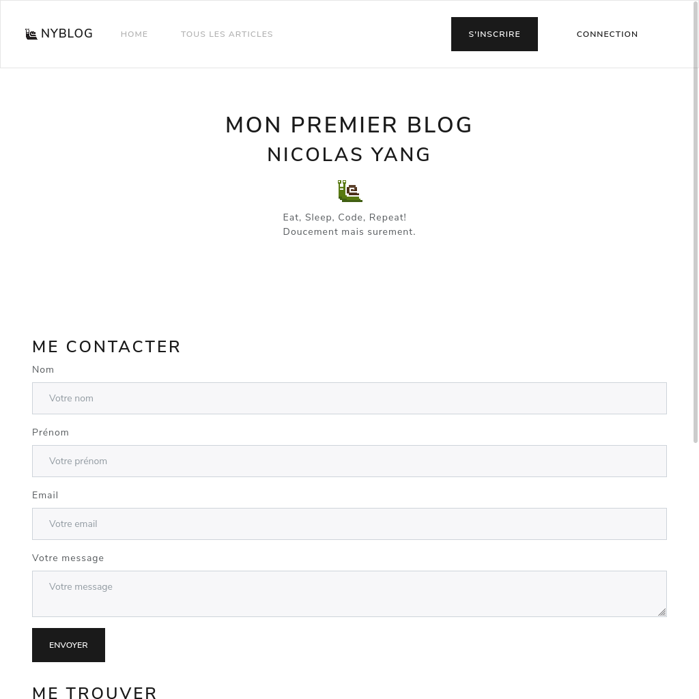 Mon premier blog en PHP
Openclassrooms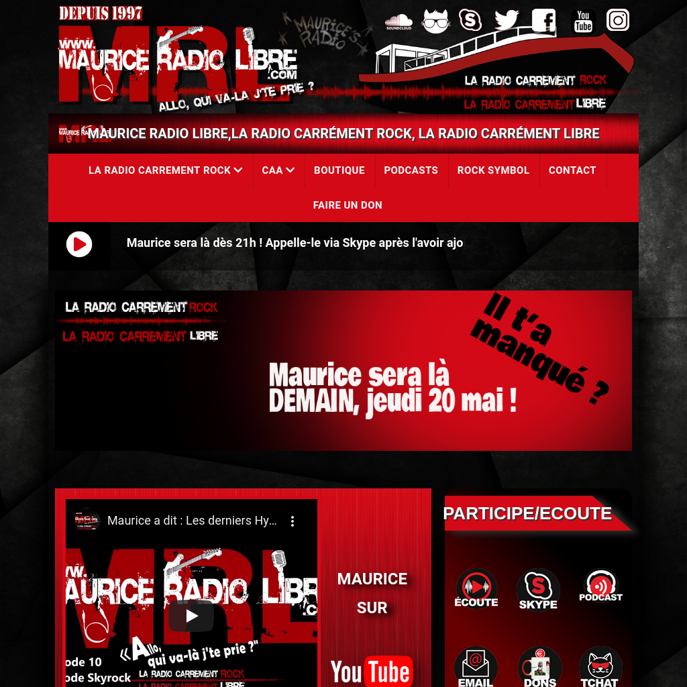 Maurice Radio Libre
Stage BTS 2ème année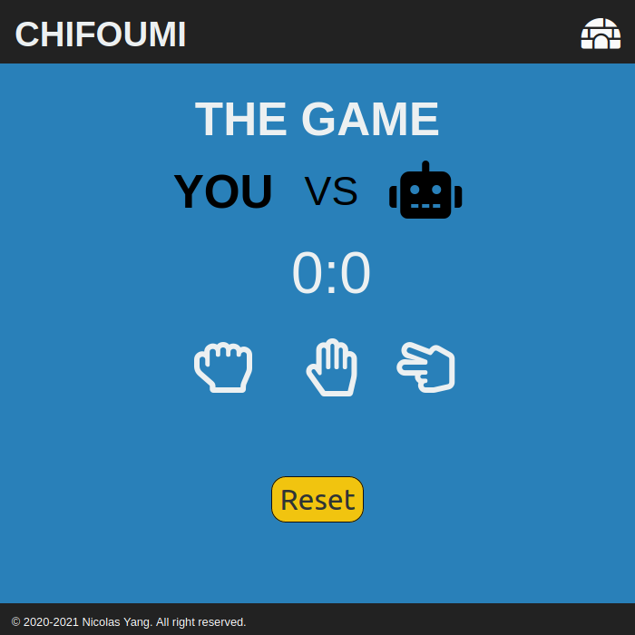 Pierre Feuille Ciseaux

Aymeline Yang
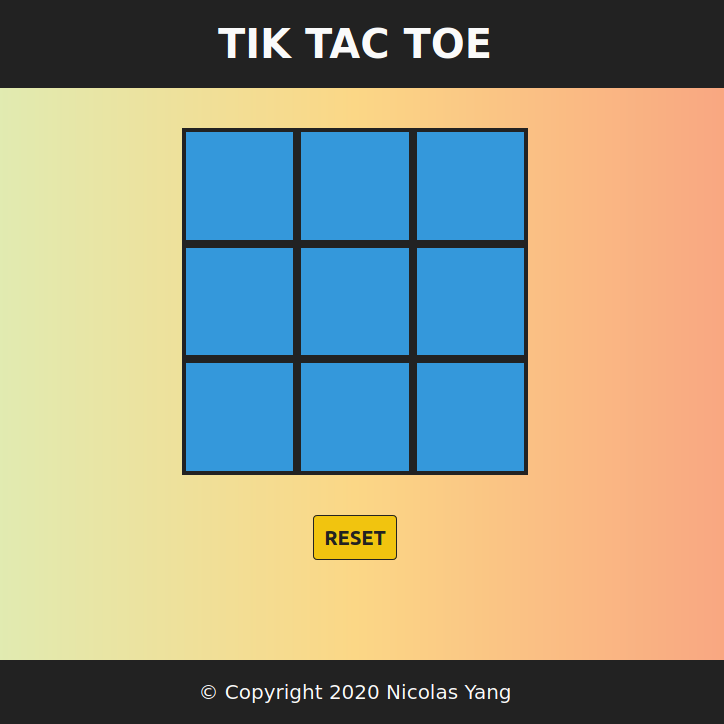 Tic Tac Toe
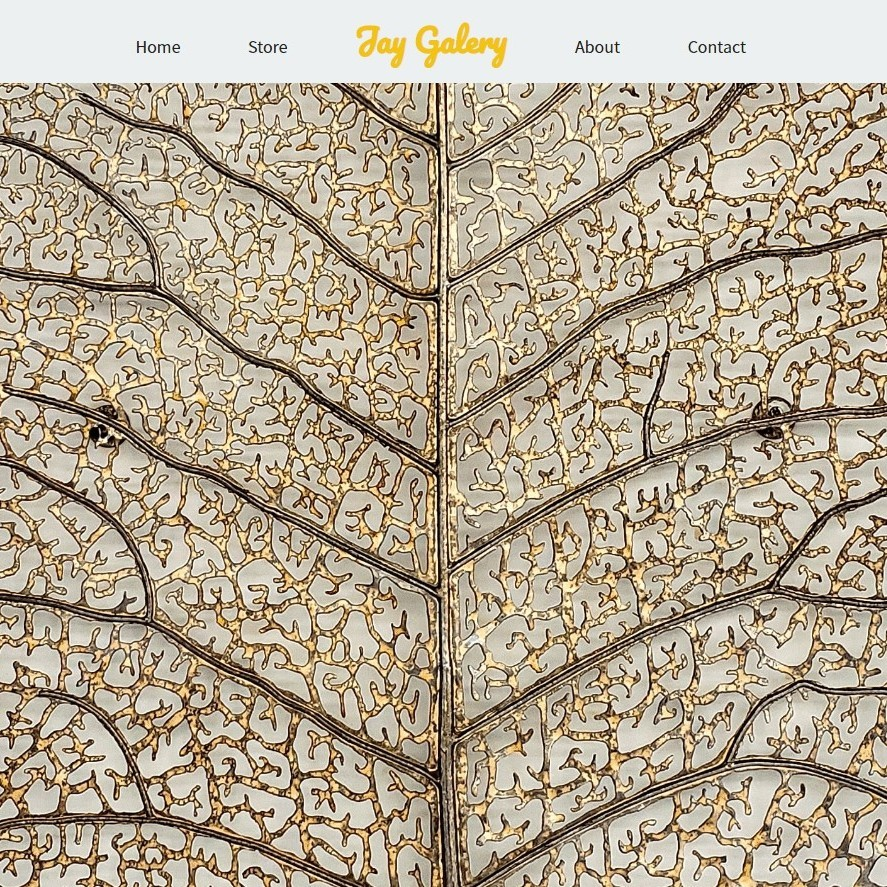 Jay Galery
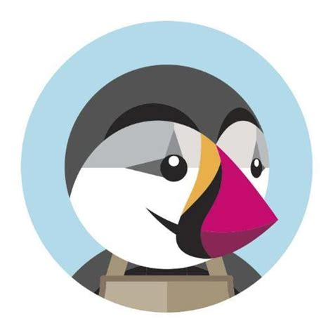 Veille Technologique
PrestaShop
- .
A propos
>_
whoami
Je suis passionné d'informatique depuis que j'ai eu mon premier pc.
Je suis actuellement en BTS Services Informatiques aux Organisations, où j'apprends les principes de l'ingénierie informatique: la programmation, les bases de données, le réseaux, l'architecture matérielle et logicielle, etc. Vous l'avez sans doute compris, je souhaite acquérir toutes les bases pour devenir un bon développeur web.
Au plaisir d'échanger avec vous.
À bientôt!